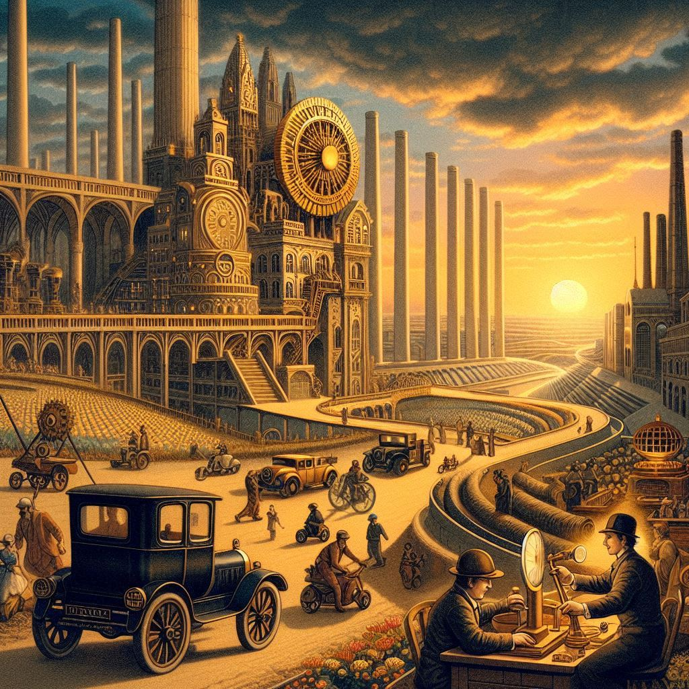

엔지니어의 시대
목차
작가
헨리 페트로스키
출판일
1985년
감상평에 대한 AI그림
이 책은 실패를 단순한 실수가 아니라 공학 발전의 필수적인 요소로 바라본다. 다리 붕괴, 건축 실패 등의 사례를 통해 엔지니어링이 어떻게 개선되고 발전하는지를 흥미롭게 풀어낸다. 기술적 완벽함을 추구하는 과정에서 실패를 받아들이고 배우는 것이 얼마나 중요한지를 강조하며, 공학을 공부하는 사람들에게 새로운 시각을 제시하는 책인 것 같다.
👉 공학을 단순한 기술이 아니라 인간적인 노력과 시행착오의 결과로 바라보게 해주는 책! 😊

감상평에 대한 AI평가
~~~~AI평가~~~~~
✨ 명확한 주제: 실패를 공학 발전의 필수 요소로 바라보는 시각이 잘 드러나 있습니다.
✨ 구체적인 사례: 다리 붕괴와 건축 실패 등의 사례를 통해 내용의 흥미를 더하고 있습니다.
✨ 교육적 가치: 공학을 공부하는 사람들에게 새로운 시각을 제시하며, 중요한 교훈을 전달하고 있습니다.